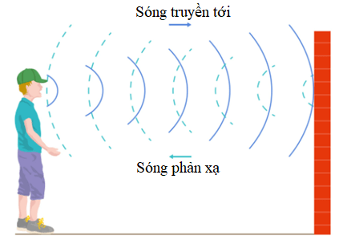
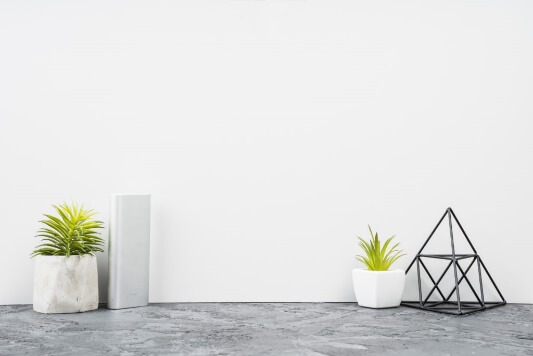
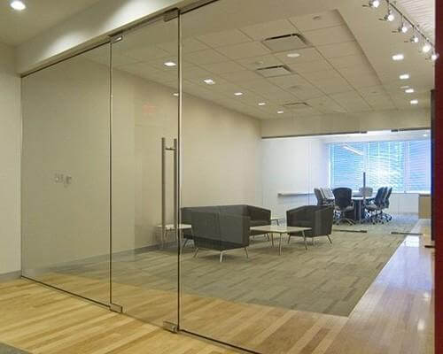
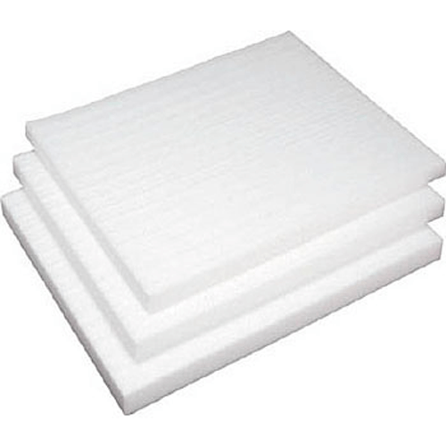
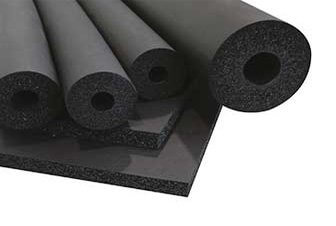
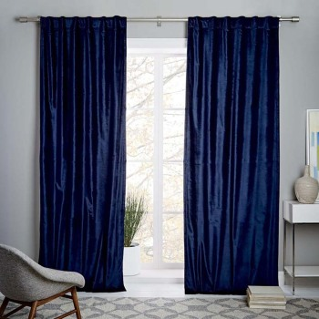
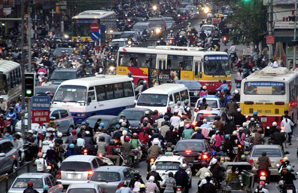

I. Phản xạ âm
Âm được dội lại khi gặp một mặt chắn gọi là âm phản xạ.

II. Vật phản xạ âm tốt, vật phản xạ âm kém
1. Vật phản xạ âm tốt
Các vật liệu cứng và có bề mặt nhẵn phản xạ âm tốt.
Ví dụ:
- Tường nhà, gạch đá hoa.
- Cửa kính.


2. Vật phản xạ âm kém
Các vật liệu mềm, xốp hoặc có bề mặt sần sùi phản xạ âm kém.
Ví dụ:
- Xốp.
- Cao su xốp.
- Rèm nhung.



III. Chống ô nhiễm tiếng ồn
1. Tiếng ồn
Những âm thanh to, kéo dài có thể gây hại đến sức khỏe và hoạt động bình thường của con người được gọi là tiếng ồn.
Những nơi thường xuyên có tiếng ồn được xem là bị ô nhiễm tiếng ồn.
Ví dụ:
- Tiếng ồn ở chợ.
- Tiếng còi xe vào giờ cao điểm.

2. Các biện pháp giảm tiếng ồn
- Hạn chế nguồn gây ra tiếng ồn.
- Phân tán tiếng ồn trên đường truyền.
- Ngăn cản sự lan truyền của tiếng ồn đến tai.
Ghi nhớ
- Âm dội lại khi gặp vật cản gọi là âm phản xạ.
- Vật cứng, nhẵn phản xạ âm tốt.
- Vật mềm, xốp hoặc sần sùi phản xạ âm kém.
- Tiếng ồn ảnh hưởng xấu đến sức khỏe.
- Cần áp dụng các biện pháp để giảm ô nhiễm tiếng ồn.